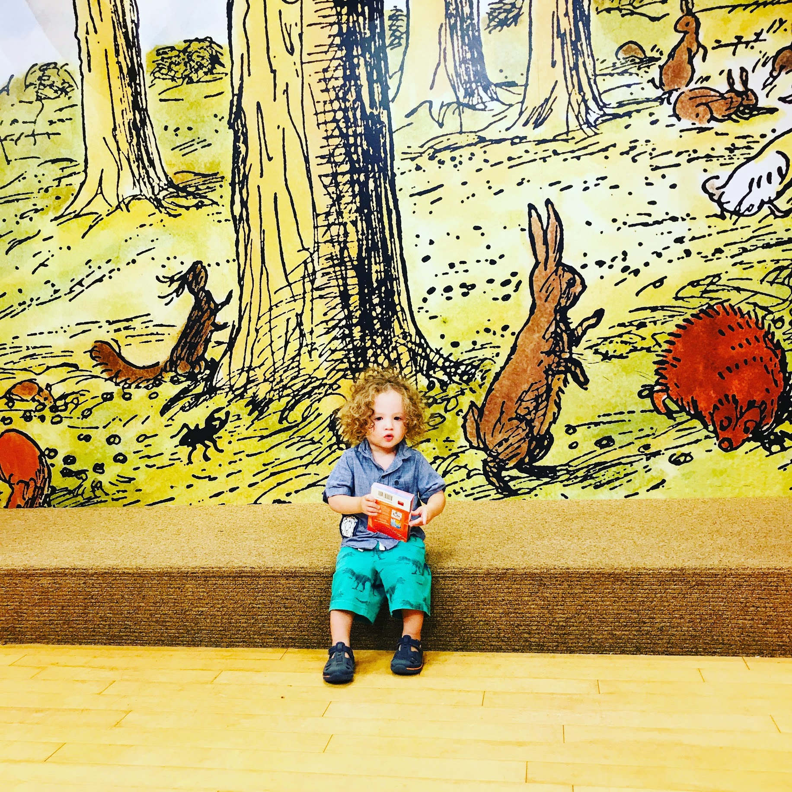

<!-- class: middle --> #### Open Access to the Brain: a Computer "Connectome" Links Brain Images in Fine Detail <!-- Connectal coding: discovering the structures linking cognitive phenotypes to individual histories --> Joshua T. Vogelstein <img src="images/neurodata_purple.png" style="height:450px; float:right;"/> <br><br><br><br><br><br><br><br><br> <!-- <img src="images/funding/jhu_bme_blue.png" STYLE="HEIGHT:95px;"/> <img src="images/funding/KNDI.png" STYLE="HEIGHT:95px;"/> --> .footnote[[jovo@jhu.edu](mailto:jovo@jhu.edu) | <http://neurodata.io/> | [@neuro_data](https://twitter.com/neuro_data)] <br> --- class: middle, inverse # .center[Motivation] --- # .center[Brains are Beautiful] <iframe src="https://www.youtube.com/embed/1aVNRZtxeIU?rel=0&autoplay=1" frameborder="0" style="overflow:hidden;overflow-x:hidden;overflow-y:hidden;height:80%;width:100%;position:absolute;left:0px;right:0px;bottom:0px"></iframe> --- # .center[Brains are Ubiquitous] <img src="images/multicolor-faces2.jpg" style="position:absolute; top:160px; left:0px; width:100%;"/> .footnote[source: [Ethnic Origins of Beauty](http://www.lesoriginesdelabeaute.com/en/accueil.html)] --- # .center[Brains are Ubiquitous] <img src="images/species.jpg" style="position:absolute; top:160px; right:0px; height:100%;"/> .footnote[source: [Earth BioGenome Project](https://www.ucdavis.edu/news/earth-biogenome-project-aims-sequence-dna-all-complex-life)] --- # .center[Brains are Awesome] <img src="images/westworld.jpeg" style="position:absolute; top:160px; left:0px; width:100%;"/> .footnote[source: [hbo](https://www.hbo.com/westworld/season-2/1-journey-into-night/premiere-reactions-roundup)] --- # .center[Brains are Expensive] <img src="images/nami-facts.png" style="position:absolute; top:160px; left:0px; width:100%;"/> .footnote[source: [nami](https://nami.org/Learn-More/Mental-Health-By-the-Numbers)] --- # .center[Changing the World] - Democratize intelligences - Understand intelligences - Enhance intelligences <!-- (3 columns), image of the world, westworld guy, einstein with lightbulb, --> --- class: middle, inverse # .center[Approach] --- # .center[Gather the Data] .pull-left[ - 20+ labs - 30+ datasets - 100+ terabytes ] .pull-left[ - from nano to macro - worm, fly, mouse, primate, human - largest and most diverse open repository in brain science ] <img src="images/neurodata_home.png" style="position:absolute; top:260px; left:150px; height:100%;"/> <!-- - image of OCP webpage, description of each dataset being > 100 GB, ie, 1 4K movie, an image of a pile of 1000 DVDs --> --- # .center[Manage the Data] .pull-left[ - too big for your hard drive - too big to open in Preview or Photos - too big to visualize online ] .pull-right[ - too many files to keep track of - too expensive to download data - big data systems ] <img src="images/High_Performance_Computing_Center_Stuttgart_HLRS_2015_07_Cray_XC40_Hazel_Hen_IO.jpg" style="position:absolute; top:260px; left:0px; width:100%;"/> .footnote[source: [wikimedia](https://commons.wikimedia.org/wiki/File:High_Performance_Computing_Center_Stuttgart_HLRS_2015_07_Cray_XC40_Hazel_Hen_IO.jpg)] --- # .center[Process the Data] .pull-left[ - convert bits to networks - distributed pipelines - integrated quality assurance ] <img src="images/Culture_Matrix_Code_corridor.jpg" style="position:absolute; top:260px; left:0px; height:100%;"/> .footnote[source: [wired](https://www.wired.com/story/the-matrix-code-sushi-recipe/)] --- # .center[Model the Data] .pull-left[ - statistical models of networks - incorporate uncertainty - address populations ] .pull-right[ - develop estimators - prove theorems ] <img src="images/brain-cicruit.svg" style="position:absolute; top:260px; left:240px; height:60%;"/> --- # .center[Analyze the Data] .pull-left[ - 4 different populations - dots represent brain regions - lines represent connections ] .pull-right[ - each brain is an average over many people - averages look similar to one another ] <img src="images/megamean3.png" style="position:absolute; top:300px; left:60px; width:90%;"/> --- ### Differences Between Studies .pull-left[ - 20 studies of ~100 individuals each - each line is the difference between a pair of studies - right to left: small to large differences ] <img src="images/inverse_batch.png" style="height: 400px;"/> <!-- - 20 datasets, >3000 individuals --> <!-- .footnote[https://neurodata.io/ndmg] --> --- ### Differences Between Sexes .pull-left[ - 20 studies of ~100 individuals each - each line is the difference between a pair of studies - right to left: small to large differences ] .pull-right[ - sex differences are small - could be due to demographics - could be due to study artifacts ] <img src="images/inverse_batch_sex.png" style="height: 400px;"/> <!-- - 20 datasets, >3000 individuals --> <!-- - sex effect is smaller than site effect --> <!-- .footnote[https://neurodata.io/ndmg] --> --- # .center[Share the Data] .pull-left[ - 1000+ unique visitors / week - ~100,000 unique visitors ] .pull-left[ - 200+ cities - 130+ countries - all inhabited continents ] <img src="images/google-analytics.png" style="position:absolute; bottom:0px; left:130px; width:70%;"/> --- # .center[Next Steps] <br> - Working with Amazon to provide free storage for everyone - Make software "self-serve" to eliminate the bottleneck of us - Require more data to pool together - New AI to harmonize data - Discover more connections across datasets --- # .center[Summary] <br> - Brains are beautiful - Brains are ubiquitous - Brains are awesome - Brains are circuits - We build big data systems and machine learning algorithms to make sense of them - Everyone can access and benefit from this work --- # .center[References] <br> - Open Connectome Project [[1]](https://doi.org/10.1145/2484838.2484870) - A Community-Developed Open-Source Computational Ecosystem for Big Neuro Data [[2]](https://www.nature.com/articles/s41592-018-0181-1) - A High-Throughput Pipeline Identifies Robust Connectomes But Troublesome Variability [[3]](https://doi.org/10.1101/188706) - Discovering and Deciphering Relationships Across Disparate Data Modalities [[4]](https://elifesciences.org/articles/41690) --- ## .center[Acknowledgements] <!-- ✉ [jovo@jhu.edu](mailto:jovo@jhu.edu) | [neurodata.io](https://neurodata.io) | <img src="images/Twitter_Logo_Blue.svg" width="22" height="22" align="top"/> [neuro_data](https://twitter.com/neuro_data) --> <div class="small-container"> <img src="faces/cep.png"/> <div class="centered">Carey Priebe</div> </div> <div class="small-container"> <img src="faces/randal.jpg"/> <div class="centered">Randal Burns</div> </div> <div class="small-container"> <img src="faces/mim.jpg"/> <div class="centered">Michael Miller</div> </div> <div class="small-container"> <img src="faces/bcaffo.jpg"/> <div class="centered">Brian Caffo</div> </div> <div class="small-container"> <img src="faces/dtward.jpg"/> <div class="centered">Daniel Tward</div> </div> <div class="small-container"> <img src="faces/minh.jpg"/> <div class="centered">Minh Tang</div> </div> <div class="small-container"> <img src="faces/avanti.jpg"/> <div class="centered">Avanti Athreya</div> </div> <div class="small-container"> <img src="faces/vince.jpg"/> <div class="centered">Vince Lyzinski</div> </div> <div class="small-container"> <img src="faces/dpmcsuss.jpg"/> <div class="centered">Daniel Sussman</div> </div> <div class="small-container"> <img src="faces/cshen.jpg"/> <div class="centered">Cencheng Shen</div> </div> <div class="small-container"> <img src="faces/jeremias.png"/> <div class="centered">Jeremias Sulam</div> </div> <div class="small-container"> <img src="faces/falk_ben.jpg"/> <div class="centered">Benjamin Falk</div> </div> <div class="small-container"> <img src="faces/jesse.jpg"/> <div class="centered">Jesse Patsolic</div> </div> <div class="small-container"> <img src="faces/youngser.jpg"/> <div class="centered">Youngser Park</div> </div> <div class="small-container"> <img src="faces/perlman.jpg"/> <div class="centered">Eric Perlman</div> </div> <div class="small-container"> <img src="faces/kwame.jpg"/> <div class="centered">Kwame Kutten</div> </div> <div class="small-container"> <img src="faces/jesus.jpg"/> <div class="centered">Jesus Arroyo</div> </div> <div class="small-container"> <img src="faces/shangsi.jpg"/> <div class="centered">Shangsi Wang</div> </div> <div class="small-container"> <img src="faces/tyler.jpg"/> <div class="centered">Tyler Tomita</div> </div> <div class="small-container"> <img src="faces/james.jpg"/> <div class="centered">James Brown</div> </div> <div class="small-container"> <img src="faces/disa.jpg"/> <div class="centered">Disa Mhembere</div> </div> <div class="small-container"> <img src="faces/ebridge.jpg"/> <div class="centered">Eric Bridgeford</div> </div> <div class="small-container"> <img src="faces/vikram.jpg"/> <div class="centered">Vikram Chandrashekhar</div> </div> <div class="small-container"> <img src="faces/pedigo.jpg"/> <div class="centered">Ben Pedigo</div> </div> <div class="small-container"> <img src="faces/jaewon.jpg"/> <div class="centered">Jaewon Chung</div> </div> <div class="small-container"> <img src="faces/gkiar.jpg"/> <div class="centered">Greg Kiar</div> </div> <div class="small-container"> <img src="faces/ronak.jpg"/> <div class="centered">Ronak Mehta</div> </div> <div class="small-container"> <img src="faces/satish.jpg"/> <div class="centered">Satish Palaniappan</div> </div> <div class="small-container"> <img src="faces/drishti.jpg"/> <div class="centered">Drishti Mannan</div> </div> <div class="small-container"> <img src="faces/bear.jpg"/> <div class="centered">Junhao Xiong</div> </div> <div class="small-container"> <img src="faces/brandon.jpg"/> <div class="centered">Brandon Duderstadt</div> </div> <div class="small-container"> <img src="faces/rguo.jpg"/> <div class="centered">Richard Guo</div> </div> <div class="small-container"> <img src="faces/loftus.jpg"/> <div class="centered">Alex Loftus</div> </div> <span style="font-size:200%; color:red;">♥, 🦁, 👪, 🌎, 🌌</span> </div> <img src="images/funding/nsf_fpo.png" STYLE="HEIGHT:95px;"/> <img src="images/funding/nih_fpo.png" STYLE="HEIGHT:95px;"/> <img src="images/funding/darpa_fpo.png" STYLE=" HEIGHT:95px;"/> <img src="images/funding/iarpa_fpo.jpg" STYLE="HEIGHT:95px;"/> <img src="images/funding/KAVLI.jpg" STYLE="HEIGHT:95px;"/> <img src="images/funding/schmidt.jpg" STYLE="HEIGHT:95px;"/> <!-- .footnote[<a href="https://neurodata.io/"><img src="images/internet-icon-26.jpg" style="height:32px"/></a>, <a href="mailto:jovo@jhu.edu"><i class="fas fa-envelope"></i></a>, <a href="https://bitsandbrains.io/"><i class="fas fa-rss"></i></a>, <a href="https://twitter.com/neuro_data"><i class="fab fa-twitter"></i></a> ] --> ---  --- <iframe src="https://www.youtube.com/embed/jziqfFp9Rq0?rel=0&autoplay=1" frameborder="0" style="overflow:hidden;overflow-x:hidden;overflow-y:hidden;height:100%;width:100%;position:absolute;top:0px;left:0px;right:0px;bottom:0px" height="100%" width="100%"></iframe> --- <iframe src="https://www.youtube.com/embed/gJdKSxKRtVI?rel=0&autoplay=1" frameborder="0" style="overflow:hidden;overflow-x:hidden;overflow-y:hidden;height:100%;width:100%;position:absolute;top:0px;left:0px;right:0px;bottom:0px" height="100%" width="100%"></iframe> --- <iframe src="https://www.youtube.com/embed/c-NMfp13Uug?rel=0&autoplay=1" frameborder="0" style="overflow:hidden;overflow-x:hidden;overflow-y:hidden;height:100%;width:100%;position:absolute;top:0px;left:0px;right:0px;bottom:0px" height="100%" width="100%"></iframe>